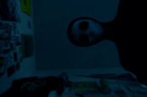

,, Dobrý den, jmenuji se Mitch. A budu vám vyprávět svůj děsivý zážitek, který se mi přihodil a pořád mě to děsí. Nevěřím na paranormální nebo nadpřirozené jevy ale potom co mě on navštívil, no, nevím jestli je to vůbec člověk a kvůli tomu začínám trochu věřit na nadpřirozeno.“
Poté co jsem se nastěhoval ke svému odloučenému bratrovi Edwinovi do domu, jsem skončil s vybalováním. Líbilo se mi že se Edwin se mnou opět baví po dlouhých 10 letech, byl jsem z toho šíleně nadšený. Týden se nic zajímavého v domě nedělo, vše bylo klidné a nic zvláštního se nestalo. Přibližně po týdnu jsem večer tvrdě usnul, ale kolem jedné hodiny v noci jsem uslyšel zašustění přicházející z venčí. Myslel jsem si, že je to jenom mýval a tak jsem to ignoroval a snažil se zase usnout. Druhý den ráno jsem o tom řekl Edwinovi a on souhlasil, že také něco slyšel…
Příští noc jsem slyšel otevření okna a hlasité žuchnutí, jako by něco lezlo do místnosti . Vstal jsem a rozhlížel se po místnosti, ale nic jsem neviděl. Nakonec jsem si šel zase lehnout. Druhý den ráno upustil Edwin šálek kávy, když mě spatřil. Zajímalo mě co se děje a on mi s hrůzou v očích ukázal zrcátko. Viděl jsem, že mám velkou ránu na levé tváři.
Byl jsem převezen do nemocnice, kde mi doktor řekl, že jsem musel být náměsíčný. Odhrnul mi košili a bylo tam něco, z čeho mi byla zima po celém těle….Na mém těle byl zašitý řez, tam, kde mám ledviny… ,, Musel jsi nějakým způsobem přijít o ledvinu minulou noc Mitchi, vůbec nevím jak je to možné…Víš o něčem?“ Ale já byl příliš vyděšený na to, abych něco řekl. ,, Promiň Mitchi. Skutečně nemůžu přijít na žádné rozumné vysvětlení…“
Příští noc byl můj zlomový bod. Okolo půlnoci jsem se vzbudil a viděl jsem něco opravdu děsivého. Zíral jsem tváří v tvář na tvora s černou kapucí a tmavě modrou maskou bez nosu a úst, zírajícího na mě dolů. Nejvíc mě děsilo že neměl oči, ale jen prázdné černé zásuvky. Měl také na sobě černou kápi. Popadl jsem kameru na krbové římse a vyfotil ho. Po té co jsem ho vyfotil, se na mě vrhl a snažil se mi rozevřít hruď a dostat se do plic. Vzal na mě ten dráp, pravděpodobně to byl nůž. Zastavil jsem ho, tím že jsem mu kopal do tváře. Povedlo se mi dostat se z postele a vyběhnout z pokoje. Vyběhl jsem z bratrova domu do noci. Utíkal jsem a nakonec jsem se ukryl v lese poblíž bratrova domu. Bohužel jsem v tom spěchu zakopl o kámen a upadl do bezvědomí.
Probral jsem se v nemocnici a můj lékař vstoupil do místnosti. ,, Mitchi mám pro tebe dobrou a špatnou zprávu. Dobrá zpráva je, že máš drobná zranění a tvoji rodiče tě vyzvednou.“ Povzdechl jsem si úlevou. ,, Špatná zpráva je, že váš bratr byl zabit. Je mi to líto.“
Moji rodiče mě vzali zpět do Edwinova domu, abych si vzal své věci. Při vstupu do pokoje jsem byl vyděšený, ale zůstal jsem v klidu. Popadl jsem foťák a začal jsem koukat na fotky. Na fotce byla chodba vedoucí do pokoje a bylo tam Edwinovo tělo a něco leželo vedle něj. Netušil jsem co to bylo, ale našel jsem to v pokoji. Zvedl jsem to a podíval se co to je. Když jsem to uviděl zblízka, skoro jsem se pozvracel. Držel jsem svou ukradenou…nedojedenou ledvinu…